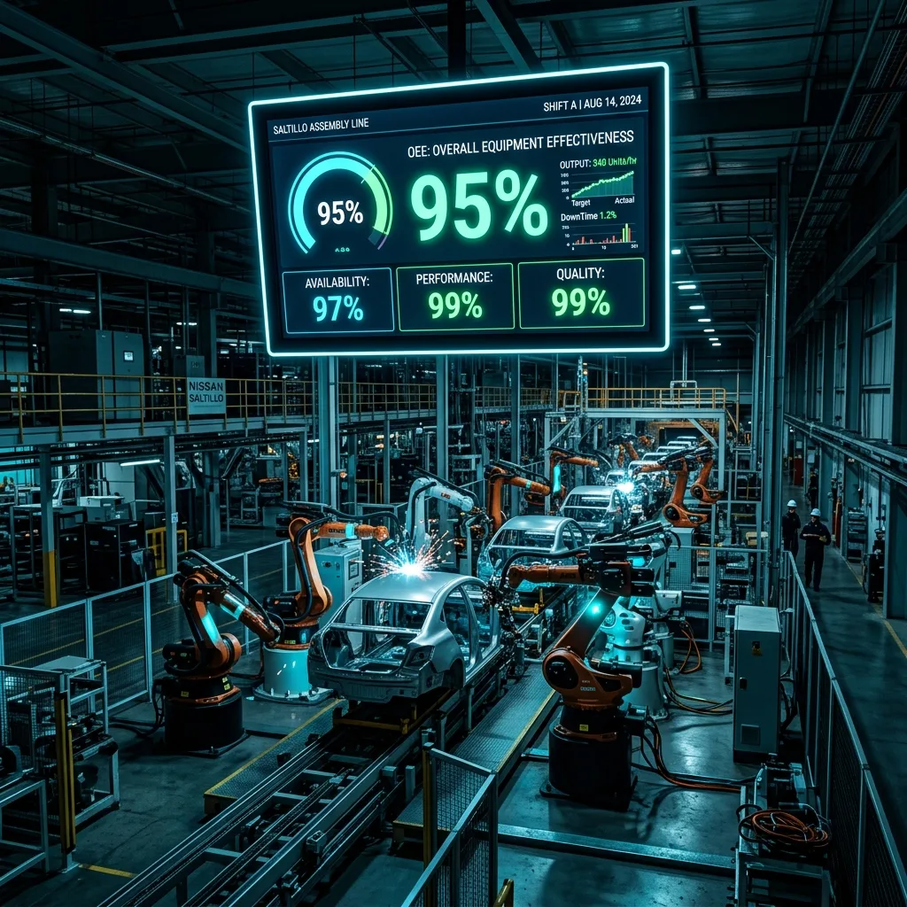

Refaccionamiento Directo con Fabricantes y Mantenimiento a Maquinaria Industrial

La continuidad operativa en las plantas industriales de Saltillo, Ramos Arizpe y Derramadero requiere no solo un diseño e instalación inicial impecable, sino también una estrategia sólida de mantenimiento integral a maquinaria y suministro ágil de refaccionamiento crítico.
En Robologix Automation, nuestra experiencia práctica en la instalación, arranque y puesta en marcha de maquinaria nos permite entender a detalle la física, eléctrica y control de cada equipo. Esto nos habilita para brindar un soporte de mantenimiento presencial de respuesta inmediata y proveer componentes originales directamente con los fabricantes.
💡 ¿Por qué es vital el refaccionamiento con contacto directo de fabricante?
Elimina intermediarios innecesarios, garantiza que los componentes sean 100% originales y compatibles con la arquitectura existente (PLC, HMI, Servos, Drives, Neumática) y asegura precios competitivos con tiempos de entrega prioritarios para evitar paros de línea prolongados.
1. Soporte de Mantenimiento Preventivo y Correctivo a Maquinaria
Gracias a nuestra experiencia de comisión en campo, ofrecemos pólizas de servicio adaptadas a los turnos de tu fábrica:
- Mantenimiento Preventivo Planificado: Limpieza de gabinetes, reapriete de bornes electromecánicos, respaldo de proyectos PLC/HMI y recalibración de sensores.
- Diagnóstico Correctivo en Tiempo Real: Rastreo de fallas en redes deterministas (Profinet, EtherNet/IP, IO-Link) y sustitución inmediata de componentes dañados.
- Alineación y Ajuste de Geometría Robótica: Recalibración de ceros en servomotores y verificación de ejes robóticos FANUC, ABB y KUKA.
2. Refaccionamiento Industrial Directo con Fabricantes Globales
Mantenemos relación y contacto directo con los fabricantes líderes del sector industrial para suministrar:
- Control y Automatización: PLCs, fuentes de poder, módulos E/S remotas y HMIs (Siemens SIMATIC, Allen-Bradley ControlLogix/CompactLogix).
- Control de Movimiento: Servomotores, amplificadores Kinetix, variadores SINAMICS / PowerFlex y encoders.
- Sensores y Neumática: Sensores ópticos Cognex/Keyence, conectores M12, válvulas de control y cilindros neumático Festo / SMC / IFM.
- Módulos Descontinuados: Localización de piezas *legacy* descatalogadas para evitar retrofit urgentes sin planificar.
⚡ Cotiza tus Refacciones y Servicios de Mantenimiento
En Robologix Automation combinamos el soporte en planta con el suministro directo de componentes. Contáctanos para cotizar refacciones originales o programar una póliza de mantenimiento para tu maquinaria en Coahuila.
¿Buscas refacciones de automatización o mantenimiento para tu maquinaria?
Habla directamente con nuestro equipo de ingenieros en Coahuila.
WhatsApp Directo (+52 844 455 1869)